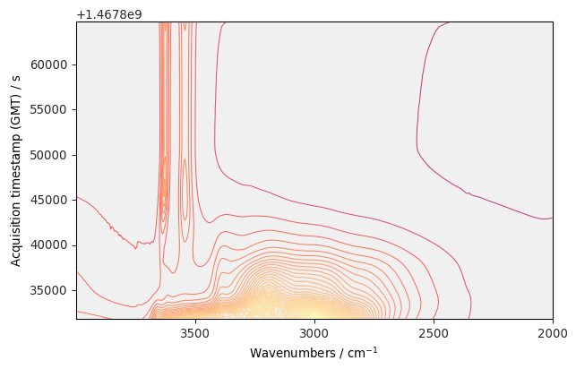
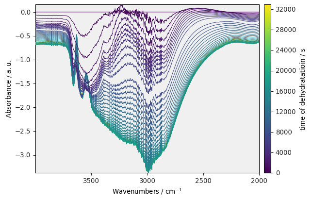
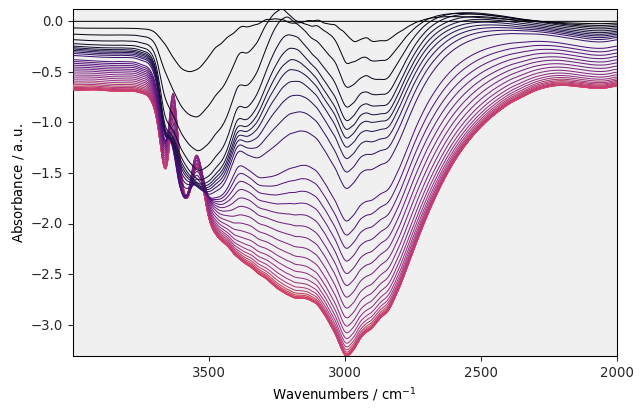
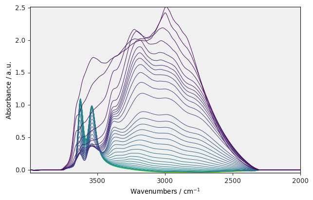
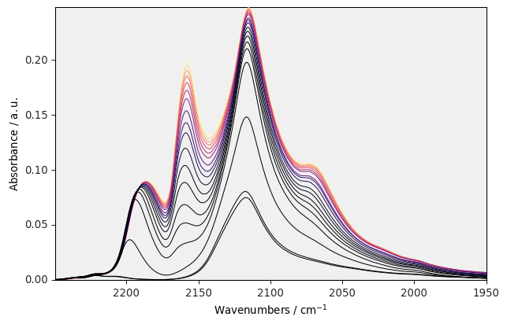
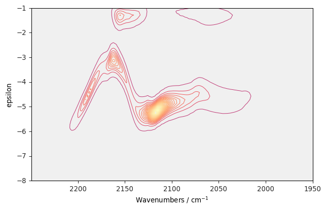

Overview¶
The purpose of this page is to give you some quick examples of what can be done with SpectroChemPy.
See the gallery of examples and consult the user’s guide for more information on using SpectroChemPy
Before using the package, we must load the API (Application Programming Interface)
The simplest way is to import all objects and methods at once into your python namespace. The loading step may take several seconds due to the large number of methods to be imported into the API namespace.
[1]:
from spectrochempy import *
![](data:image/png;base64,iVBORw0KGgoAAAANSUhEUgAAABgAAAAYCAYAAADgdz34AAAAAXNSR0IArs4c6QAAAAlw
SFlzAAAJOgAACToB8GSSSgAAAetpVFh0WE1MOmNvbS5hZG9iZS54bXAAAAAAADx4OnhtcG1ldGEgeG1sbnM6eD0iYWRvYmU6bnM6
bWV0YS8iIHg6eG1wdGs9IlhNUCBDb3JlIDUuNC4wIj4KICAgPHJkZjpSREYgeG1sbnM6cmRmPSJodHRwOi8vd3d3LnczLm9yZy8x
OTk5LzAyLzIyLXJkZi1zeW50YXgtbnMjIj4KICAgICAgPHJkZjpEZXNjcmlwdGlvbiByZGY6YWJvdXQ9IiIKICAgICAgICAgICAg
eG1sbnM6eG1wPSJodHRwOi8vbnMuYWRvYmUuY29tL3hhcC8xLjAvIgogICAgICAgICAgICB4bWxuczp0aWZmPSJodHRwOi8vbnMu
YWRvYmUuY29tL3RpZmYvMS4wLyI+CiAgICAgICAgIDx4bXA6Q3JlYXRvclRvb2w+bWF0cGxvdGxpYiB2ZXJzaW9uIDIuMS4wLCBo
dHRwOi8vbWF0cGxvdGxpYi5vcmcvPC94bXA6Q3JlYXRvclRvb2w+CiAgICAgICAgIDx0aWZmOk9yaWVudGF0aW9uPjE8L3RpZmY6
T3JpZW50YXRpb24+CiAgICAgIDwvcmRmOkRlc2NyaXB0aW9uPgogICA8L3JkZjpSREY+CjwveDp4bXBtZXRhPgqNQaNYAAAGiUlE
QVRIDY1We4xU1Rn/3XPuYx47u8w+hnU38hTcuoUEt/6D2y4RB0ME1BoEd9taJaKh9CFiN7YGp7appUAMNmktMZFoJTYVLVQ0smsy
26CN0SU1QgsuFAaW3WVmx33N677O6XfuyoIxTXqSO/fec+75fd93vt/3/UbDV0aKSZmCpkFMLz3T9utuu2N+o98aDSMBKVAo89z5
y+zEz3ZafcCOfvWdlGCalqKn1Bf71CygTd+mf1esSOnpdMpTb+vWpTZuWVfe3jLPa5tzHYNm0T5N0gpdkkHaDBeGBU6d1/t/fyS8
+/CbqdfUvmsx1PuMgc2bNxv79u1zgd31r+7JH1jbIZKxWRXAcYUQ8IWvBfBXNjEuJWPgMA02NR7C3/pYT9fjdZ3A9tGrWF8YSJHn
qcDz3y7q2T967PZv+gnYJdd1mEZ+62zGDQV/dQgKhmLzDNOXCEWM3j6eTT5Y3w78dOBKJLR1PQf+4ivPj76UPZnssBN+wbM9Aet/
AV81Mf1EEULXYfOobvX2WWQk0aoioXwwSmirOlioY0mu8BIouzYl7P8GV3vpqCCEZvlFz769w08oLDWvyKIyL1asSm28d6WfzA97
ztvvV1kexUMsmhlkULEkuGYmFYC6AvfUrITnwUKl5K79lkjeSSRRTCTbQPd95e1WzMbZSya74XoXAxctCllCnbECMOjZNGRwvzIX
nD85wbkMmKK+U045Dtdi8Qp+SAxU2GTg2bYlC9224pgvmSb54vkVTBQYyhUt2KjAMyMmPjwRQW5Mh2WKwJhlBh6jVGagFM84wZnQ
4bpC0Rt4pk1PbSt0NDcxDA5xryosDHWgtbM0DGZDWLSoiDMDYeQnGVrmOThxLozB0RAaahzkJzjKNqcIQBymJFMkOlN8Dqjpg0XY
Tx5xO/QbmmUrqIjGJznq47TqTaClKYfjp+PInLMwnOdYvtQBZ2XcunQY+VwIo4U4muoFEjVEFE6lQyEUKzHYfgQG9ylCyngU+Cxj
tOqxCDGHcCsOMCs6iQul5ZiStdATYxjMZXDLTUVwLY8Jey4uOh2IxjwsrP8UXJYxUrkZrghBahzV5iXU6gNkq0Z1EzIsUBUSCV2n
EOHo0LVxHCpuxabJJdhi5PFnvw5vLXwXIfNZvD/+JNo/X40NegE54sUaazl+UL8XD1x+FB9Ijjt4EQfdGN6J/x131LwIV9ap/AYs
0x1fz1ZKFbh6A7qKy/By9Dg6G36Ep91vUJJ15Cqr0Z67E8/HzmBrw1OwxWyM+3Mo6BAuSB17oyfx0Oyl2DN0Hqs/70Cx6hBCvESF
UY1ShWXZZEE7OTAYxZzaPH4TuoiusZvRnunFy2NbiHYuBp2vB66srX4vMEjpRKPxKXmnoQ4+Mn4DPiv8CYcrs3GfNUXJLtM+alSO
hrMj/KT+wBNW3+E/2liywNO3iSflbaFva/+stGDTxE0E9Sjaox8HBhxpEamzMGSEaFKg+mjEddzDh1MxTDq3YV1kGBsjfwW3S9Cq
anjmko+ndlb1UR3s6K8JlfphNWq9Ew/7c61T2BB/EbcaNkb8GBaE0tANH7/M34PLdhJDzjIcL9xPbdTG6zyM72Y+wXPHmvB489No
fm0b5HnbQ9Rgp/7DSSd29AeVvPeNyK6JcYl/yQVi5dBjuGvoV/gaJe47s45QUxrDmcYX0MBsdF7egvXZ7+O0vZA4X8QmOQWjlSK7
RDz5wIM30gp9UbWcGjXxhzdDu1SiNSpx6kcQB57rPnr/3dlkZarWLnlRq5oPET1dOCIOk4wALib9eeS5iygfhkd09H0DWphB/+gs
+PcOAS+ssrFmmXXgVfR0de9cpbAJfH3Q1jofW9DZk56dDcVsq9YcsoUMEd1qyLoT3BX1YiyHMJuk97hyjqIoE91t+NcTLeN0ZrfM
oXatZbu6G0h4VG+ibqq0IJVK6cAjo6serG3vSUezCMct0yQeSOFJSUImqb2qbknUpDqlZxE0QZ+ZUpSlZx79h4Nda6zef9dlk121
JDjbR5XggPRZlRnS6bRQRtLpn4++cuie/Yvn2svmNxuLw9WCcYIl4fEoTEGiSTUqJdfgU+8ROqf1iMkLzS389YtNPXc/PH8l8ONB
JZkHD+4JtD04HmVEDWWErmBhzV2/2LB1bemJG6krzv2S6NOHUgtEP0Oif5pE/3fHoruP7N8RiP61GArzSwbUhJJQpXJKiKbfr/3b
IhKq76sKPUdF9NW/LSqfSn6vjv8C45H/6FSgvZQAAAAASUVORK5CYII=)
|
SpectroChemPy's API - v.0.2.5.dev8 © Copyright 2014-2021 - A.Travert & C.Fernandez @ LCS |
NDDataset, the main object¶
NDDataset is a python object, actually a container, which can represent most of your multidimensional spectroscopic data.
For instance, in the following we read data from a series of FTIR experiments, provided by the OMNIC software:
[2]:
datadir = pathclean(preferences.datadir)
ds = NDDataset.read_omnic(datadir / 'irdata' / 'nh4y-activation.spg')
Display dataset information¶
[3]:
ds
[3]:
| name | nh4y-activation |
| author | travis@travis-job-ffb5927d-55f8-4ad7-9731-7da026825ebd |
| created | 2021-01-29 13:12:36.391345+00:00 |
| description | Omnic title: NH4Y-activation.SPG Omnic filename: /home/travis/miniconda/envs/scpy3.7/lib/python3.7/site-packages/scp_data/testdata/irdata/nh4y-activation.spg |
| history | 2021-01-29 13:12:36.391345+00:00:imported from spg file /home/travis/miniconda/envs/scpy3.7/lib/python3.7/site- packages/scp_data/testdata/irdata/nh4y-activation.spg ; 2021-01-29 13:12:36.391345+00:00:sorted by date |
| DATA | |
| title | Absorbance |
| values | [[ 2.057 2.061 ... 2.013 2.012] [ 2.033 2.037 ... 1.913 1.911] ... [ 1.794 1.791 ... 1.198 1.198] [ 1.816 1.815 ... 1.24 1.238]] a.u. |
| shape | (y:55, x:5549) |
| DIMENSION `x` | |
| size | 5549 |
| title | Wavenumbers |
| coordinates | [ 6000 5999 ... 650.9 649.9] cm^-1 |
| DIMENSION `y` | |
| size | 55 |
| title | Acquisition timestamp (GMT) |
| coordinates | [1.468e+09 1.468e+09 ... 1.468e+09 1.468e+09] s |
| labels | [[ 2016-07-06 19:03:14+00:00 2016-07-06 19:13:14+00:00 ... 2016-07-07 04:03:17+00:00 2016-07-07 04:13:17+00:00] [ vz0466.spa, Wed Jul 06 21:00:38 2016 (GMT+02:00) vz0467.spa, Wed Jul 06 21:10:38 2016 (GMT+02:00) ... vz0520.spa, Thu Jul 07 06:00:41 2016 (GMT+02:00) vz0521.spa, Thu Jul 07 06:10:41 2016 (GMT+02:00)]] |
Slicing a dataset¶
[5]:
region = ds[:, 4000.0:2000.0]
_ = region.plot(method='map', colormap='magma')

Maths on datasets¶
[6]:
region.y -= region.y[0] # make y coordinate reative to the first point
region.y.title = 'time of dehydratatioin'
region -= region[0] # suppress the last spectra to all
_ = region.plot(colorbar=True)

Processing a dataset¶
We just give here few examples
Smoothing¶
[7]:
smoothed = region.smooth(window_length=51, window='hanning')
_ = smoothed.plot(colormap='magma')

Baseline correction¶
[8]:
region = ds[:, 4000.0:2000.0]
smoothed = region.smooth(window_length=51, window='hanning')
blc = BaselineCorrection(smoothed, method='multivariate', interpolation='pchip', npc=5)
basc = blc.compute([2000., 2300.], [3800., 3900.])
[9]:
_ = basc.plot()

Analyis¶
IRIS processing¶
[10]:
ds = NDDataset.read_omnic(datadir / 'irdata' / 'CO@Mo_Al2O3.SPG')[:, 2250.:1950.]
pressure = [0.00300, 0.00400, 0.00900, 0.01400, 0.02100, 0.02600, 0.03600, 0.05100, 0.09300, 0.15000, 0.20300, 0.30000,
0.40400, 0.50300, 0.60200, 0.70200, 0.80100, 0.90500, 1.00400]
ds.y = Coord(pressure, title='Pressure', units='torr')
_ = ds.plot(colormap='magma')

[11]:
param = {'epsRange': [-8, -1, 50], 'lambdaRange': [-10, 1, 12], 'kernel': 'langmuir'}
iris = IRIS(ds, param, verbose=False)
_ = iris.plotdistribution(-7, colormap='magma')
